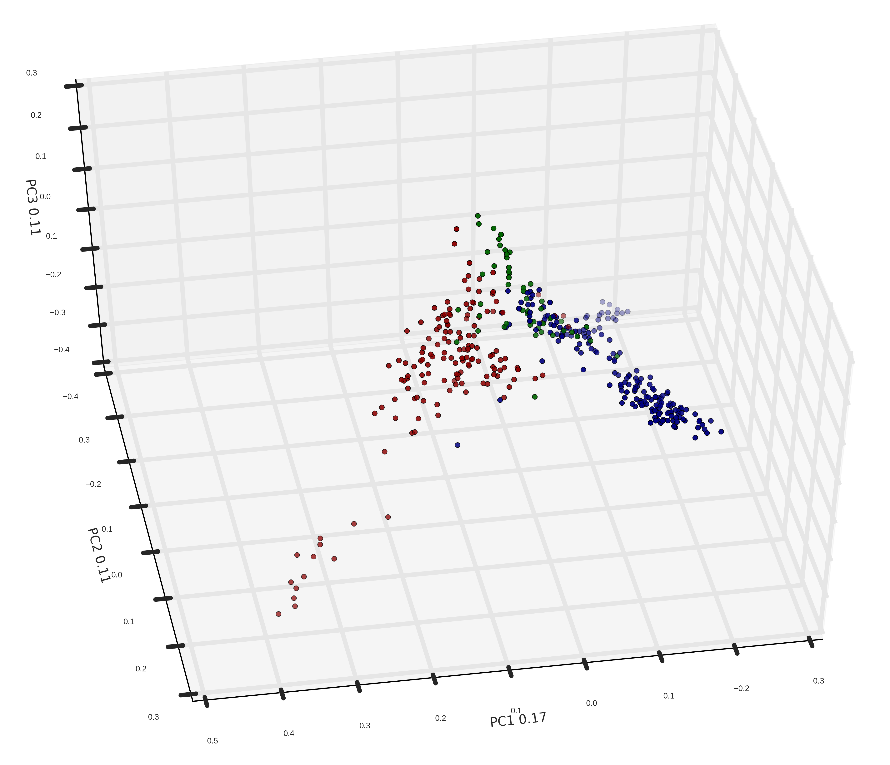

<!doctype html>
<html lang="en">
<head>
<meta charset="utf-8">
<title>Digitale Dramenanalyse</title>
<meta name="author" content="Christof Schöch">
<meta name="description" content="Slides">
<meta name="apple-mobile-web-app-capable" content="yes">
<meta name="apple-mobile-web-app-status-bar-style" content="black-translucent">
<meta name="viewport" content="width=device-width, initial-scale=1.0, maximum-scale=1.0, user-scalable=no, minimal-ui">
<link rel="stylesheet" href="css/reveal.css">
<link rel="stylesheet" href="css/theme/simple.css" id="theme">
<link rel="stylesheet" href="lib/css/zenburn.css">
<script>
var link = document.createElement( 'link' );
link.rel = 'stylesheet';
link.type = 'text/css';
link.href = window.location.search.match( /print-pdf/gi ) ? 'css/print/pdf.css' : 'css/print/paper.css';
document.getElementsByTagName( 'head' )[0].appendChild( link );
</script>
<!--[if lt IE 9]>
<script src="lib/js/html5shiv.js"></script>
<![endif]-->
</head>

<body>
<div class="reveal">
<div class="slides">
<section data-markdown="" data-separator="^\n---\n" data-separator-vertical="^\n--\n" data-charset="utf-8">
<script type="text/template">

<!--  vvvvv THIS IS WHERE THE CONTENT GOES! vvvvvvv  -->

# Topic Modeling und dramatische Gattungen
<hr/>
<br/>
<br/>
<br/>
<small>[Nanette Rißler-Pipka](http://www.ku.de/slf/romanistik/lehrstuehle-professuren/literaturwissenschaft/romanlitwi2/personen/prof-dr-nanette-rissler-pipka/) (Eichstätt) -</small>
<small>[Christof Schöch](http://www.christof-schoech.de/) (Würzburg)</small>
<br/>
<br/>
<br/>
<small>Panel "Aktuelle Herausforderungen der digitalen Dramenanalyse"</small>
<small>Jahrestagung des DHd-Verbands, Bern, 15. Februar 2017</small>

---
## Überblick

1. [Topic Modeling](#/2)
2. [Typen von Topics](#/3)
3. [Topics und Untergattungen](#/4)
4. [Fazit](#/5)

<br/>
<br/>
<small>Folien: [https://christofs.github.io/digitale-dramanenalyse-dhd17](https://christofs.github.io/digitale-dramanenalyse-dhd17)</small>


---
 
## 1. Topic Modeling

---

## 2. Typen von Topics

---

## 3. Topics und Untergattungen

--

## Untergattungen des Dramas
<a href="img/figure10.png"></img></a>
* Komödien, Tragödien und Tragikomödien

---
   
## Fazit

--

### Fazit

--

## Referenzen

---
    
# Panel-Diskussion
<hr/>
<br/>
<br/>
<br/>
<br/>
<br/>
<br/>
<br/>
<small>Panel "Aktuelle Herausforderungen der digitalen Dramenanalyse"</small>
<small>Jahrestagung des DHd-Verbands, Bern, Februar 2017</small>
<br/>

---

# Publikums-Diskussion
<hr/>
<br/>
<br/>
<br/>
<br/>
<br/>
<br/>
<br/>
<small>Panel "Aktuelle Herausforderungen der digitalen Dramenanalyse"</small>
<small>Jahrestagung des DHd-Verbands, Bern, Februar 2017</small>
<br/>


---

<br/>
<br/>
## Vielen Dank! 
<br/>
<br/>
<br/>
<br/>
<br/>
<br/>
<br/>
Christof Schöch, 2017
<br/><http://www.christof-schoech.de>
<br/><a href="https://creativecommons.org/licenses/by/4.0/">CC-BY 4.0</a>
<br/>


<!--^^^^^^^ DON'T TOUCH UNLESS YOU KNOW WHAT YOU'RE DOING :-) ^^^^^^^-->

</script>
</section>
</div>
</div>

<script src="lib/js/head.min.js"></script>
<script src="js/reveal.js"></script>
<script>
// Full list of configuration options available at:
// https://github.com/hakimel/reveal.js#configuration
Reveal.initialize({
    controls: true,
    progress: true,
    history: true,
    center: true,
    transition: 'slide', // none/fade/slide/convex/concave/zoom
    // Optional reveal.js plugins
    dependencies: [
        { src: 'lib/js/classList.js', condition: function() { return !document.body.classList; } },
        { src: 'plugin/markdown/marked.js', condition: function() { return !!document.querySelector( '[data-markdown]' ); } },
        { src: 'plugin/markdown/markdown.js', condition: function() { return !!document.querySelector( '[data-markdown]' ); } },
        { src: 'plugin/highlight/highlight.js', async: true, callback: function() { hljs.initHighlightingOnLoad(); } },
        { src: 'plugin/zoom-js/zoom.js', async: true },
        { src: 'plugin/notes/notes.js', async: true }
        ]
    });
</script>
</body>
</html>
